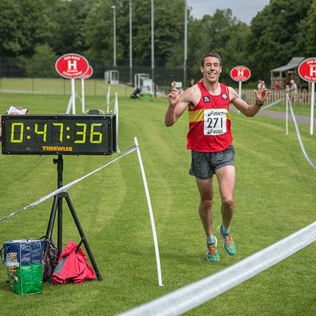

We hope you were able to come and join in for our 2016 race - the weather was beautiful.
Starting at 10:30 a.m. from the Hampton-In-Arden Sports Club grounds as usual, the race is properly measured and timed and is designed to attract serious runners from outside the sports club and the village. There is an advance entry fee of £13 per entrant, or £11 if you are attached to an affiliated club. Anyone is welcome to enter on a first come first served basis.

To make sure the race is run efficiently and safely, and that everyone enjoys their time on the race, there are some instructions we give to all runners.
The 2016 race was run on 19th June, 2016
The overall winner for 2016 was Alistair Smith from Coventry Godiva - with a time of 47:37